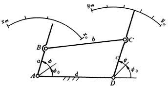

按两连架杆对应位置呈连续函数关系设计铰链四杆机构
利用铰链四杆机构的两连架杆转角 来模拟给定的函数关系 y=f(x) 。 x 的变化区间 ( ),y 的变化区间 ( ), 见下图

根据具体条件可以选定比例系数
式中φ m 为 x 变化区间内对应转角；ψ m 为 y 变化区间内对应的转角。
由于平面四杆机构待定的尺寸参数是有限的，所以一般只能近似实现预期函数。常用的近似设计采用插值逼近法，其插值结点的横坐标民下式确定：

式中 i=1,2,...m 为插值结点数。
如果取m=3, 则得三个插值结点，那么这三组对应角位置可以利用设计方法“按两连架杆预定的对应位置设计”中的式(1-3)
求出机构的尺度参数。
如果取m=5, 则得五个插值结点，那么这五组对应角位置可以利用设计方法“按两连架杆预定的对应位置设计”中的式(1-1) 求出机构尺度参数。
相关链接：
按两连架杆预定的对应位置设计